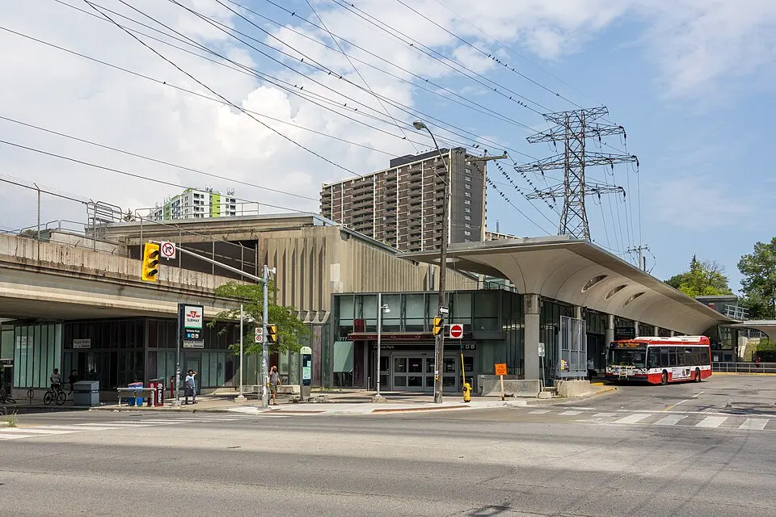

Station atlas / Victoria Park
Station history
Victoria Park


Station history
The extension to Warden opened with elevated platforms at Victoria Park and a bus terminal below.
A rebuilt bus terminal opened in May, replacing the original bays beneath the elevated subway.
The Federation of Canadian Municipalities recognized the station’s green-roof project with a sustainability award.